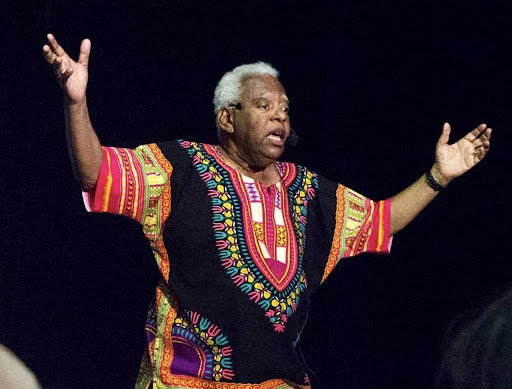

Sobre João Acaibe
Nascido e crescido em Espírito Santo do Pinhal, no interior de São Paulo, iniciou sua carreira artística ainda na adolescência trabalhando como locutor de rádio.
Foi casado com Lenice Damazio Acaiabe, com quem dois filhos: Carlos Augusto e Thays. Acaiabe era casado com Ana Maria Pascuini Bertuchi, tendo três enteados: Erika, Ricardo e Wilson. Foi também tio do ator Eduardo Acaiabe.
Acaiabe morreu na noite de 31 de março de 2021, aos 76 anos, após sofrer uma parada cardíaca por conta da COVID-19
Cidade em que nasceu
O ator nasceu no estado de São Paulo em Espírito Santo do Pinhal
Alguns personagens
- Pai Didico em 2018
- Chefe Chico em 2013
- Tio Barnabé em 2001
- Afonso em 2007
- Bambalalão em 1977